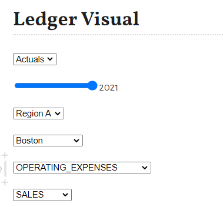
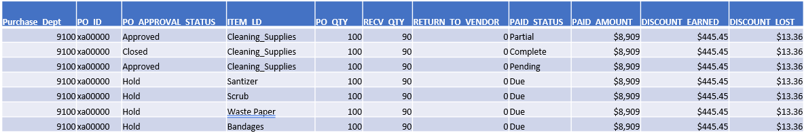

Visualizations, Buttons, sliders, filters, n-D plots, plots vs graphs
In previous chapter, We created Finance datasets samples.
In this section, we will again look into few examples.
These examples show case how to use, sliders, inputs, select boxes to dynamically change data and see data changes.
Since this documentation is a static web page, at present, these example will NOT update data.
In future, I will deploy my Pluto notebooks at Pluto server and update these sections to see live data. However, these code samples works well in local or remote Pluto server environment.
TODO: host Pluto notebook here.
Would, Could, Should, What if scenarios
Below sliders, help update/filter data.
For example, User can select LEDGER TYPE, OPERATINGREGION, FISCALYEAR, LOCATIONS/REGIONS, ACCOUNT/LOCATION ROLL UP to change data dynamically.
sample PlutoUI sliders/input image

additionally, Sliders are use to update data without change actual data for comparison.
what if
Region A is merged with Region B
Employee resume work from office, how much Travel amounts % will increase.
% of Office supply expenses given to Employee as home office setup
would Region A, Cash Flow Investment have returned 7% ROI
would Region B received Government/investor funding
could have increased IT operating expenses by 5%
could have reduced HR temp staff
should have paid vendor invoiced on time to recive rebate
should have applied loan to increase production
should have retired a particular Asset
Income, Cash-Flow & Balance sheet statements
below is sample Finance Ledger Data with slicers, inputs
julia> using DataFrames, Plots, DatesERROR: ArgumentError: Package Plots not found in current path. - Run `import Pkg; Pkg.add("Plots")` to install the Plots package.julia> # create default binding values/params using PlutoUIERROR: ArgumentError: Package PlutoUI not found in current path. - Run `import Pkg; Pkg.add("PlutoUI")` to install the PlutoUI package.julia> ## WARNING ## These bind variable will throw in error in documentation ## however, these runs fine on Pluto notebooks and provide a slider to change values dynamically # @bind ld Select(["Actuals", "Budget"]) # @bind rg Select(["Region A", "Region B", "Region C"]) # @bind yr Slider(2020:1:2021, default=2020, show_value=true) # @bind qtr Slider(1:1:4, default=1, show_value=true) # @bind ld_p Select(["Actuals", "Budget"]) # @bind yr_p Slider(2020:1:2021, default=2021, show_value=true) # @bind rg_p Select(["Region A", "Region B", "Region C"]) # @bind ldescr Select(unique(location.DESCR)) # @bind adescr Select(unique(accounts.CLASSIFICATION)) # @bind ddescr Select(unique(dept.CLASSIFICATION)) # create dummy data accounts = DataFrame(AS_OF_DATE=Date("1900-01-01", dateformat"y-m-d"), ID = 11000:1000:45000, CLASSIFICATION=repeat([ "OPERATING_EXPENSES","NON-OPERATING_EXPENSES", "ASSETS","LIABILITIES", "NET_WORTH","STATISTICS","REVENUE" ], inner=5), CATEGORY=[ "Travel","Payroll","non-Payroll","Allowance","Cash", "Facility","Supply","Services","Investment","Misc.", "Depreciation","Gain","Service","Retired","Fault.", "Receipt","Accrual","Return","Credit","ROI", "Cash","Funds","Invest","Transfer","Roll-over", "FTE","Members","Non_Members","Temp","Contractors", "Sales","Merchant","Service","Consulting","Subscriptions" ], STATUS="A", DESCR=repeat([ "operating expenses","non-operating expenses", "assets","liability","net-worth","stats","revenue" ], inner=5), ACCOUNT_TYPE=repeat([ "E","E","A","L","N","S","R" ],inner=5));ERROR: LoadError: UndefVarError: @dateformat_str not defined in expression starting at REPL[3]:1julia> dept = DataFrame(AS_OF_DATE=Date("2000-01-01", dateformat"y-m-d"), ID = 1100:100:1500, CLASSIFICATION=[ "SALES","HR", "IT","BUSINESS","OTHERS" ], CATEGORY=[ "sales","human_resource","IT_Staff","business","others" ], STATUS="A", DESCR=[ "Sales & Marketing","Human Resource","Infomration Technology","Business leaders","other temp" ], DEPT_TYPE=[ "S","H","I","B","O"]);ERROR: LoadError: UndefVarError: @dateformat_str not defined in expression starting at REPL[4]:1julia> location = DataFrame(AS_OF_DATE=Date("2000-01-01", dateformat"y-m-d"), ID = 11:1:22, CLASSIFICATION=repeat([ "Region A","Region B", "Region C"], inner=4), CATEGORY=repeat([ "Region A","Region B", "Region C"], inner=4), STATUS="A", DESCR=[ "Boston","New York","Philadelphia","Cleveland","Richmond", "Atlanta","Chicago","St. Louis","Minneapolis","Kansas City", "Dallas","San Francisco"], LOCA_TYPE="Physical");ERROR: LoadError: UndefVarError: @dateformat_str not defined in expression starting at REPL[5]:1julia> ledger = DataFrame( LEDGER = String[], FISCAL_YEAR = Int[], PERIOD = Int[], ORGID = String[], OPER_UNIT = String[], ACCOUNT = Int[], DEPT = Int[], LOCATION = Int[], POSTED_TOTAL = Float64[] );julia> # create 2020 Period 1-12 Actuals Ledger l = "Actuals";julia> fy = 2020;julia> for p = 1:12 for i = 1:10^5 push!(ledger, (l, fy, p, "ABC Inc.", rand(location.CATEGORY), rand(accounts.ID), rand(dept.ID), rand(location.ID), rand()*10^8)) end endERROR: UndefVarError: location not definedjulia> # create 2021 Period 1-4 Actuals Ledger l = "Actuals";julia> fy = 2021;julia> for p = 1:4 for i = 1:10^5 push!(ledger, (l, fy, p, "ABC Inc.", rand(location.CATEGORY), rand(accounts.ID), rand(dept.ID), rand(location.ID), rand()*10^8)) end endERROR: UndefVarError: location not definedjulia> # create 2021 Period 1-4 Budget Ledger l = "Budget";julia> fy = 2021;julia> for p = 1:12 for i = 1:10^5 push!(ledger, (l, fy, p, "ABC Inc.", rand(location.CATEGORY), rand(accounts.ID), rand(dept.ID), rand(location.ID), rand()*10^8)) end endERROR: UndefVarError: location not definedjulia> ledger[:,:]0×9 DataFrame Row │ LEDGER FISCAL_YEAR PERIOD ORGID OPER_UNIT ACCOUNT DEPT LOCATIO ⋯ │ String Int64 Int64 String String Int64 Int64 Int64 ⋯ ─────┴────────────────────────────────────────────────────────────────────────── 2 columns omittedjulia> # Create Finance Statements ld = "Actuals""Actuals"julia> rg = "Region B""Region B"julia> yr = 20202020julia> qtr = 11julia> ld_p = "Actuals""Actuals"julia> rg_p = "Region B""Region B"julia> yr_p = 20202020julia> qtr_p = 11julia> ldescr = unique(location.DESCR)ERROR: UndefVarError: location not definedjulia> adescr = unique(accounts.CLASSIFICATION)ERROR: UndefVarError: accounts not definedjulia> ddescr = unique(dept.CLASSIFICATION)ERROR: UndefVarError: dept not definedjulia> ######################## ##### BALANCE SHEET #### ######################## # rename dimensions columns for innerjoin df_accounts = rename(accounts, :ID => :ACCOUNTS_ID, :CLASSIFICATION => :ACCOUNTS_CLASSIFICATION, :CATEGORY => :ACCOUNTS_CATEGORY, :DESCR => :ACCOUNTS_DESCR);ERROR: UndefVarError: accounts not definedjulia> df_dept = rename(dept, :ID => :DEPT_ID, :CLASSIFICATION => :DEPT_CLASSIFICATION, :CATEGORY => :DEPT_CATEGORY, :DESCR => :DEPT_DESCR);ERROR: UndefVarError: dept not definedjulia> df_location = rename(location, :ID => :LOCATION_ID, :CLASSIFICATION => :LOCATION_CLASSIFICATION, :CATEGORY => :LOCATION_CATEGORY, :DESCR => :LOCATION_DESCR);ERROR: UndefVarError: location not definedjulia> # create a function which converts accounting period to Quarter function periodToQtr(x) if x ∈ 1:3 return 1 elseif x ∈ 4:6 return 2 elseif x ∈ 7:9 return 3 else return 4 end endperiodToQtr (generic function with 1 method)julia> ############################################################## # create a new dataframe to join all chartfields with ledger # ############################################################## df_ledger = innerjoin( innerjoin( innerjoin(ledger, df_accounts, on = [:ACCOUNT => :ACCOUNTS_ID], makeunique=true), df_dept, on = [:DEPT => :DEPT_ID], makeunique=true), df_location, on = [:LOCATION => :LOCATION_ID], makeunique=true);ERROR: UndefVarError: df_accounts not definedjulia> transform!(df_ledger, :PERIOD => ByRow(periodToQtr) => :QTR);ERROR: UndefVarError: df_ledger not definedjulia> function numToCurrency(x) return string("USD ",round(x/10^6; digits = 2), "m") endnumToCurrency (generic function with 1 method)julia> gdf = groupby(df_ledger, [:LEDGER, :FISCAL_YEAR, :QTR, :OPER_UNIT, :ACCOUNTS_CLASSIFICATION, :DEPT_CLASSIFICATION, # :LOCATION_CLASSIFICATION, :LOCATION_DESCR]);ERROR: UndefVarError: df_ledger not definedjulia> gdf_plot = combine(gdf, :POSTED_TOTAL => sum => :TOTAL);ERROR: UndefVarError: gdf not definedjulia> select(gdf_plot[( (gdf_plot.FISCAL_YEAR .== yr) .& (gdf_plot.QTR .== qtr) .& (gdf_plot.LEDGER .== ld) .& (gdf_plot.OPER_UNIT .== rg) ),:], :FISCAL_YEAR => :FY, :QTR => :Qtr, :OPER_UNIT => :Org, :ACCOUNTS_CLASSIFICATION => :Accounts, :DEPT_CLASSIFICATION => :Dept, # :LOCATION_CLASSIFICATION => :Region, :LOCATION_DESCR => :Loc, :TOTAL => ByRow(numToCurrency) => :TOTAL)ERROR: UndefVarError: gdf_plot not definedjulia> ######################## ### Income Statement ### ######################## select(gdf_plot[( (gdf_plot.FISCAL_YEAR .== yr) .& (gdf_plot.QTR .== qtr) .& (gdf_plot.LEDGER .== ld) .& (gdf_plot.OPER_UNIT .== rg) .& (in.(gdf_plot.ACCOUNTS_CLASSIFICATION, Ref(["ASSETS", "LIABILITIES", "REVENUE","NET_WORTH"]))) ),:], :FISCAL_YEAR => :FY, :QTR => :Qtr, :OPER_UNIT => :Org, :ACCOUNTS_CLASSIFICATION => :Accounts, # :DEPT_CLASSIFICATION => :Dept, # :LOCATION_CLASSIFICATION => :Region, # :LOCATION_DESCR => :Loc, :TOTAL => ByRow(numToCurrency) => :TOTAL)ERROR: UndefVarError: gdf_plot not definedjulia> ######################## ##### CASH FLOW ######## ######################## select(gdf_plot[( (gdf_plot.FISCAL_YEAR .== yr) .& (gdf_plot.QTR .== qtr) .& (gdf_plot.LEDGER .== ld) .& (gdf_plot.OPER_UNIT .== rg) .& (in.(gdf_plot.ACCOUNTS_CLASSIFICATION, Ref(["NON-OPERATING_EXPENSES","OPERATING_EXPENSES" ]))) ),:], :FISCAL_YEAR => :FY, :QTR => :Qtr, :OPER_UNIT => :Org, :ACCOUNTS_CLASSIFICATION => :Accounts, # :DEPT_CLASSIFICATION => :Dept, # :LOCATION_CLASSIFICATION => :Region, # :LOCATION_DESCR => :Loc, :TOTAL => ByRow(numToCurrency) => :TOTAL)ERROR: UndefVarError: gdf_plot not definedjulia> ######################## ##### Ledger Visual #### ######################## plot_data = gdf_plot[( (gdf_plot.FISCAL_YEAR .== yr_p) .& (gdf_plot.LEDGER .== ld_p) .& (gdf_plot.OPER_UNIT .== rg_p) .& (gdf_plot.LOCATION_DESCR .== ldescr) .& (gdf_plot.DEPT_CLASSIFICATION .== ddescr) .& (gdf_plot.ACCOUNTS_CLASSIFICATION .== adescr)) , :];ERROR: UndefVarError: gdf_plot not definedjulia> # @df plot_data scatter(:QTR, :TOTAL/10^8, title = "Finance Ledger Data", xlabel="Quarter", ylabel="Total (in USD million)", label="$ld_p Total by $yr_p for $rg_p") @df plot_data plot(:QTR, :TOTAL/10^8, title = "Finance Ledger Data", xlabel="Quarter", ylabel="Total (in USD million)", label=[ "$ld_p by $yr_p for $rg_p $ldescr $adescr $ddescr" ], lw=3)ERROR: LoadError: UndefVarError: @df not defined in expression starting at REPL[41]:1julia> ################################# ## Actual vs Budget Comparison ## ################################# plot_data_a = gdf_plot[( (gdf_plot.FISCAL_YEAR .== yr_p) .& (gdf_plot.LEDGER .== "Actuals") .& (gdf_plot.OPER_UNIT .== rg_p) .& (gdf_plot.LOCATION_DESCR .== ldescr) .& (gdf_plot.DEPT_CLASSIFICATION .== ddescr) .& (gdf_plot.ACCOUNTS_CLASSIFICATION .== adescr)) , :];ERROR: UndefVarError: gdf_plot not definedjulia> # @df plot_data scatter(:QTR, :TOTAL/10^8, title = "Finance Ledger Data", xlabel="Quarter", ylabel="Total (in USD million)", label="$ld_p Total by $yr_p for $rg_p") plot_data_b = gdf_plot[( (gdf_plot.FISCAL_YEAR .== yr_p) .& (gdf_plot.LEDGER .== "Budget") .& (gdf_plot.OPER_UNIT .== rg_p) .& (gdf_plot.LOCATION_DESCR .== ldescr) .& (gdf_plot.DEPT_CLASSIFICATION .== ddescr) .& (gdf_plot.ACCOUNTS_CLASSIFICATION .== adescr)) , :];ERROR: UndefVarError: gdf_plot not definedjulia> # @df plot_data scatter(:QTR, :TOTAL/10^8, title = "Finance Ledger Data", xlabel="Quarter", ylabel="Total (in USD million)", label="$ld_p Total by $yr_p for $rg_p") @df plot_data_a plot(:QTR, :TOTAL/10^8, title = "Finance Ledger Data", xlabel="Quarter", ylabel="Total (in USD million)", label=[ "Actuals by $yr_p for $rg_p $ldescr $adescr $ddescr" ], lw=3)ERROR: LoadError: UndefVarError: @df not defined in expression starting at REPL[44]:1julia> @df plot_data_b plot!(:QTR, :TOTAL/10^8, title = "Finance Ledger Data", xlabel="Quarter", ylabel="Total (in USD million)", label=[ "Budget by $yr_p for $rg_p $ldescr $adescr $ddescr" ], lw=3)ERROR: LoadError: UndefVarError: @df not defined in expression starting at REPL[45]:1
Dynamic roll ups
Invoices by Diversity Vendor groups
Vendor Ranking
Product Ranking
Cost per Invoice
Operating Expenses trend
Supply chain Inventory Dashboard
below is an example dashboard (image) built in Pluto
This dashboard uses OnlineStats.jl for "real-time" udpates
